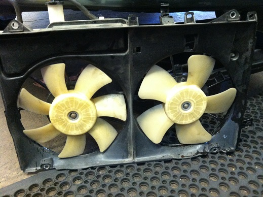

Today my boss, Jim, asked me to have a look at the Hawthorne Auto Clinic Prius. It is a 2004 with about 100k miles on it. It has an aftermarket Hymotion Li-ion battery that makes it a PHEV (plug-in hybrid electric vehicle); depending on the driving scenario it can get 100 mpg or better for the first 40 miles after a full charge. It has been in a minor front-end collision since the shop has owned it, but it was bought used, so its history before that may hide some secrets.
The issue today is that it doesn’t seem to be blowing sufficiently cold air with the A/C set to Max Cold. Sitting in the car during diagnosis with the vents blowing 47 degree Fahrenheit was a cool refreshing gift, but despite it being an improvement from the humid surrounding environment of the shop, it should be getting a bit colder than that.
All of the basics seemed to be in order– it’s working fairly well, after all, just not quite well enough. Blower, compressor, fresh/recirc doors, vent modes, I could see and hear the radiator/condenser fans running. (It was a little bit odd that the engine did not cycle on at all; the A/C on a Gen II Prius is powered by the hybrid vehicle battery, so normally the engine will have to turn on every few minutes to recharge the battery– but not so with the Hymotion kit.) All of the live data from the scan tool seemed reasonable, too. The ambient temperature seemed a bit high– 99 degrees Fahrenheit (Jim and Liz don’t work us that hard)– but I thought that maybe it was just proximity to the engine that was bringing it up. Actual shop temperature was somewhere around 76 degrees Fahrenheit.
The odd thing was the radiator/condenser fans didn’t really seem to be generating much airflow– usually I feel a warm breeze coming up from the engine compartment when the fans kick on. It reminded me of one of the bugs the instructor had installed in car during my time at Mt Hood Community College; the symptom was that the car was overheating. It was just a piece of paper slipped down between the condenser and radiator (there is no earthly way such a blockage could find its way to that location) to prevent any air flow.
I incredulously shined a light from behind the condenser and radiator, making sure I could see it from the front, just to be sure someone wasn’t playing a prank on me. I used a piece of paper to get a better visual idea of the air flow rather than just trusting the feel on my hand, but the result seemed even less credible: The fans were blowing hot air from the engine compartment forward (and against any natural flow if we had been on the road at any speed), through the hot radiator and then through the condenser which needs cooler air than the radiator.
Why had this happened? How had it happened? The fan connectors are keyed; it’s not as if you could simply plug them in with reverse polarity. Had there been wire harness damage? Did someone previously splice wires incorrectly? The wires don’t go far before they join the black-hole of the main engine room wire harness and go under the equally mysterious engine room junction box/relay box. There was no obvious wire repair.
I looked up the circuit diagram for the fans and found three relays that effectively put the fans in series (low speed) or parallel (high speed), controlled by the Engine Control Module, A/C amplifier, an A/C pressure switch, and a water temperature switch. It looks like the radiator fan could be energized without the condenser fan turning on, but I don’t think I have ever observed that. And as far as which one is the radiator fan and which one is the condenser far– I never bothered to figure it out. They certainly have their own circuits, but physically they both draw air through either the right half or left half of the radiator and condenser, so unless I needed to back-probe the wires I didn’t see a point in differentiating.
I looked for the relays, not really knowing what I was hoping to find. I found only 2 of the 3 relays the engine room relay box, but the third was also documented as being there, too. What? This is not a GM car. This is a Toyota; the wiring diagrams are supposed to be reliable.
It took me awhile to figure out that the missing fan relay was actually a part of an integrated relay (a narrow block comprising 4 relays) whose connectors come in from the back side of the relay box, and looking inconspicuously from the front like a few fuse holders that the engineers had opted to not use in the final design.
I hit a dead end with the wiring… I lifted the car to see what I could from underneath, again, not knowing what I was hoping to find, just… observing.
And it struck me that the fan blades were not identical like I would have expected. They were more like mirror images of each other. Each of the fans must have to spin in opposite directions to operate correctly. So maybe it’s not that the connectors were plugged in backwards, but maybe to the wrong fan? No, the pig-tail lengths would have made that impossible.
From the time that I had discovered the fans spinning backwards I had been mulling the idea of just find a good place to cut the wires and reverse them. But I wasn’t even certain that would correct the problem, or perhaps it would make more problems. For example, there could be a diode or some asymmetry inside the motors that could make it either not work at all or fail early. And no matter how good someone is at wiring repairs (I’m not so shabby, if I do say so myself), it will never be as good the original; it will always be a potential for failure in the future or at least the first area of suspicion for the next diagnosis. No, I wanted to find the actual root cause of this problem and fix it.
So here is what I settled on: I removed the radiator fan assembly and swapped the fan blades between the fan motors. I can’t imagine why someone ever would have had occasion to have the fan blades off of the motors in the first place (hopefully it wasn’t me!), but I could hardly blame them for not seeing that they were different and needed to go back to the same motor. But the conclusion I came to was that this must have been the case. The radiator and fan housings are aftermarket– you can simply tell by looking at the radiator filler neck and the coolant reservoir, and the reservoir appears to be glued or otherwise integrated into the fan housing. Could it be that a new radiators and fan assembly come without fan blades and they have to be transferred from the old ones? That just seems so unlikely to me. The motors, too?

I believe I took the photo above after I had swapped the fan blades to their allegedly correct positions. It was only after I had them out that I realized that one has 7 vanes and the other has 5 vanes. I imagine this is to prevent constructive/destructive interference (beating) noise. But I have no explanation for what would be beneficial about having them spin in opposite directions. The fan blades are imprinted with the name “Denso” which makes me think that they are factory original parts. One of them has an arrow indicating the direction of rotation– not very helpful if you don’t know which way the motors are supposed to spin before you install it in the car and also not too hard to determine by the shape. I don’t believe it is possible to put the fan blades on backward, but having not specifically thought to check that while I had it out of the car I can’t be certain.
For any techs out there wondering if you can get the fan assembly out of a Gen II Prius without also removing the radiator itself: (why would you bother reading blogs to find out– just go do it!) I had to remove the left (slightly upper) radiator hose from the radiator, but otherwise it wasn’t too difficult. Keep in mind though, that is was an aftermarket radiator.
After I got everything back together and turned the A/C on, the blower outlet temperature was 48 degrees Fahrenheit. What a waste of time! I knew I should have just checked the refrigerant charge and added a little more! (Maybe I’ll see if that works tomorrow.)
Update: 7-7-2015
I haven’t had a chance to get back to the Hawthorne Auto Clinic Prius, but a similar 2005 Prius came in with A/C not cooling at all. I’m sure this isn’t the cause of the A/C not cooling, but the fans on this one were also blowing backwards! What are the chances? This one had also been in a front end collision for which we have not detailed information, but I’m going to assume again that it was the body shop’s fault.